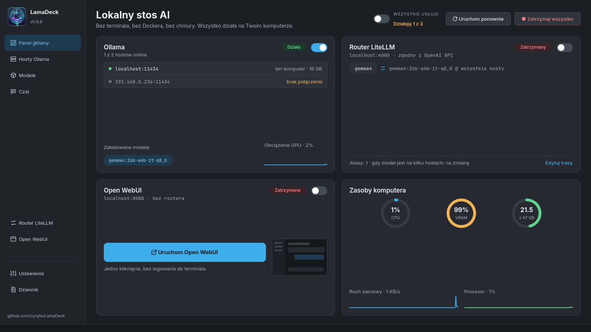
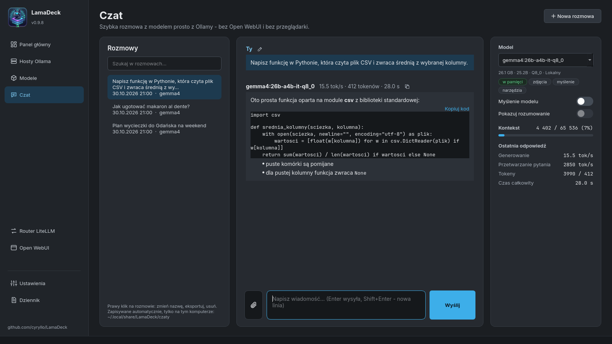
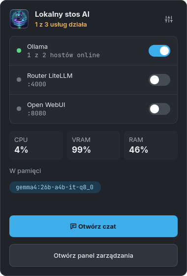

Ollama na kilku komputerach
Ten komputer i każdy w sieci lokalnej: dostępny czy nie, wersja, czas odpowiedzi, zajęty VRAM i RAM oraz modele na dysku i w pamięci. Host dodajesz, wpisując jego adres.
LamaDeck to program na KDE, który obsługuje Ollamę na każdym komputerze w domowej sieci, łączy wszystkie ich modele pod jednym adresem dla VS Code i innych narzędzi, a do tego ma własny czat, który umie szukać w internecie i podawać źródła. Bez terminala, bez Dockera, bez chmury.

Zaczęło się od małego przełącznika usługi Ollama, a wyrosło jedno miejsce na cały stos. Każdy przycisk woła te same narzędzia, które wpisałbyś w terminalu, a działania wymagające uprawnień administratora pytają o hasło w zwykłym okienku KDE.
Ten komputer i każdy w sieci lokalnej: dostępny czy nie, wersja, czas odpowiedzi, zajęty VRAM i RAM oraz modele na dysku i w pamięci. Host dodajesz, wpisując jego adres.
Router LiteLLM wystawia wszystkie hosty pod http://localhost:4000/v1
(zgodnie z API OpenAI). Stałe aliasy, np. code albo chat,
i gotowy config.yaml dla Continue.dev.
Jedna wyszukiwarka dla biblioteki Ollamy i plików GGUF z Hugging Face, z prawdziwym rozmiarem każdego wariantu i szacunkiem pamięci. Filtr „tylko MoE” dla APU i laptopów.
Rozmowa z dowolnym modelem na dowolnym hoście, z liczbą tokenów na sekundę pod każdą odpowiedzią. Wyszukiwanie w internecie ze źródłami, zdjęcia, dokumenty PDF i Office, linki do stron i rozmowy zapisywane na Twoim dysku.
Instalacja i uruchamianie bez Dockera i bez uprawnień administratora. Start, stop, otwieranie w przeglądarce, zmiana portu i kopia zapasowa wszystkich czatów do pliku ZIP.
Ollama, LiteLLM, Open WebUI i sam program na jednej liście. Błędy dostają proste wyjaśnienie, co poszło nie tak, i link do hosta, o którym mówią.


Robiony pod KDE Plasma (inne pulpity też działają): repozytorium dla Debiana i Ubuntu, AppImage dla każdej innej dystrybucji. Samą Ollamę można zainstalować z poziomu programu.
Repozytorium dodajesz raz. Potem LamaDeck aktualizuje się razem z resztą systemu.
sudo curl -fsSLo /usr/share/keyrings/lamadeck-archive-keyring.gpg \
https://cyryllo.github.io/LamaDeck/apt/lamadeck-archive-keyring.gpg
sudo curl -fsSLo /etc/apt/sources.list.d/lamadeck.sources \
https://cyryllo.github.io/LamaDeck/apt/lamadeck.sources
sudo apt update
sudo apt install lamadeckPobierz lamadeck_…_all.deb ze
strony wydań i zainstaluj.
Pakiet sam dodaje repozytorium APT, więc aktualizacje przychodzą tą samą drogą.
sudo apt install ./lamadeck_*_all.debJeden plik ze wszystkim w środku, dla Fedory, Archa, openSUSE i innych. Pobierz
LamaDeck-…-x86_64.AppImage ze
strony wydań i uruchom.
Przy pierwszym starcie proponuje dodanie do menu aplikacji.
chmod +x LamaDeck-*-x86_64.AppImage
./LamaDeck-*-x86_64.AppImageKopiuje program do katalogu domowego i dodaje go do menu. Aktualizacja to ponowne uruchomienie tego samego skryptu.
git clone https://github.com/cyryllo/LamaDeck.git
cd LamaDeck
./install.shAppImage wymaga glibc 2.34 lub nowszej (Ubuntu 22.04, Debian 12, Fedora 35 i nowsze). Do wersji 0.9 LamaDeck nazywał się „Ollama Manager”; instalacja zastępuje stary pakiet i zachowuje ustawienia oraz rozmowy.
Program robi to, do czego powstał. Wszystko większe, jak konta użytkowników, bazy wiedzy czy głos, to zadanie Open WebUI, a ono jest wbudowane.